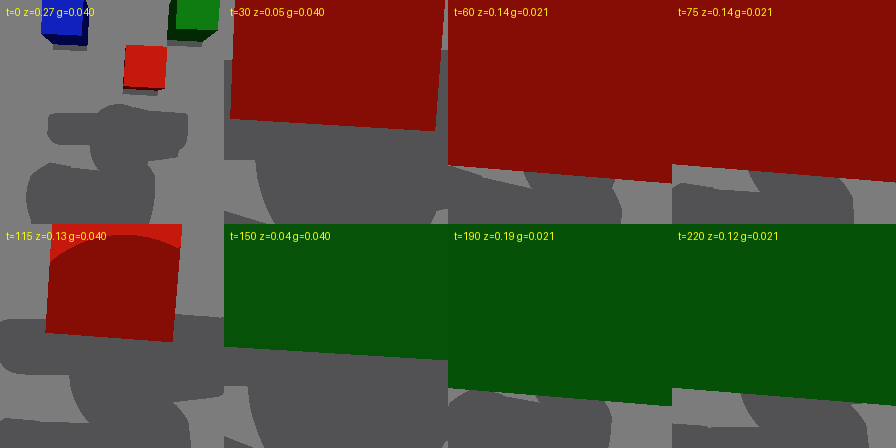
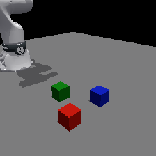

1. Filterable Benchmark Explorer (n = 25 Unseen Layouts, ckpt 5000, K = 8)
| Method | Regime | 2-Stack | 3-Stack (95% CI) | Base Disturb | Int / Abs | Lat (ms) | Spearman (G / P) |
|---|
2. Visual Root-Cause & Failure Comparison

Wrist-only occlusion: Held Red/Green cubes cover ~80% of the wrist frame, blinding stateless π₀ to target coordinates.

Dual-camera fix: Adding
overview_image → base_0_rgb gives all policies identical workspace visibility.nominal_pi0 on unseen_tight_00: S3=True (0.0 mm base disturb).anchored_phys_est on unseen_tight_00: S3=False (local offset clips Green against Red at c6).